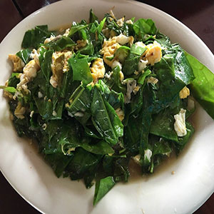
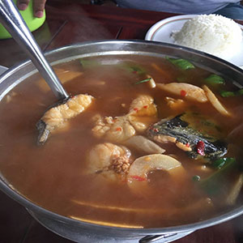

ครัวบ้านนอก สำหรับใครที่ชอบอาหารรสชาติบ้านๆ แนะนำร้านนี้เลย อร่อย รสจัดจ้าน ถึงเครื่องถึงรสจริงๆ ในเมนูแยกไว้เลย อาหารท้องถิ่น อาหารแนะนำ บอกได้เลยร้านนี้ไม่ธรรมดาถึงจะเป็นร้านเเล็กๆ แต่ก็คุ้มค่าที่จะลอง แนะนำเลยร้านนี้ไม่ผิดหวัง ที่จอดรถสะดวกสบาย อาหารรสดีโดยเฉพาะอาหารใต้รสเด็ดมาก เมนูแนะนำ ใบเหลียงผัดไข่ แกงส้มหน่อไม้ปลาดุกทะเล ราคาไม่แรง ที่ทางกว้างขวาง ความสะอาดไม่มีปัญหา บรรยากาศริมน้ำ นั่งสบาย บริการดี สุภาพ อาหารได้เร็ว ไม่ผิดหวัง เมนูเด็ด: แกงส้มหน่อไม้ปลาดุกทะเล , ใบเหนียงผัดไข่ ช่องทางการติดต่อ เส้นทาง : https://goo.gl/maps/bHCBMxD2EzjtFY4c8 facebook : https://www.facebook.com/113091013794156/ อาหารของทางร้านยังมีอีกมากมายหลายเมนู เลือกแวะชมเลือกแวะชิม กันได้เลยจ้า |
|
|  | ใบเหนียงผัดไข่ |
|  | แกงส้มหน่อไม้ปลาดุกทะเล |
| ขอบคุณรูปภาพจาก www.wongnai.com | |